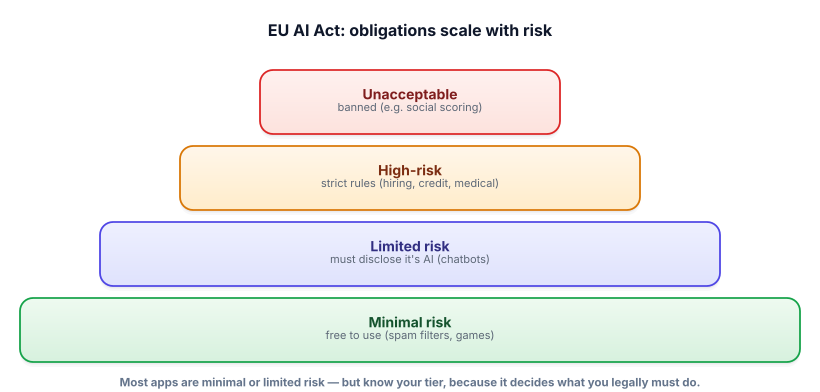

Governance & regulation
“Be responsible” is becoming “comply with the law.” You don’t need to be a lawyer, but you do need to understand how AI regulation is structured, because it shapes what you’re allowed to build and what you must document. This is the literacy interviewers increasingly expect.
AI rules work like rules for vehicles. A bicycle needs almost nothing, a car needs a licence and a yearly check, a school bus needs a specially trained driver and strict inspections, and some vehicles are simply banned from the road. The law cares about what the vehicle is used for and how much harm it can do, not how clever its engine is. The analogy breaks because one AI model can be the bicycle in one product and the school bus in another, so the tier belongs to the use, not the model.
This lesson explains concepts so you can talk about them and design sensibly. Laws vary by region, are actively evolving, and the specifics change — for real compliance decisions, check the current regulations and consult legal counsel. Treat this as engineering literacy, not a compliance manual.
The organizing idea: risk-based rules
The most influential framework, the EU AI Act, is worth knowing because its core idea is spreading: obligations scale with risk. Rather than one rule for all AI, it sorts uses into tiers and imposes heavier requirements as the potential for harm rises. An AI that recommends songs is treated very differently from one that screens job applicants — and rightly so.

The tiers, and what they mean for you
Unacceptable risk → banned. A small set of uses considered too harmful are prohibited outright (e.g. government social scoring, certain manipulative systems). If your idea is here, it’s not a compliance task — it’s off the table.
High risk → strict obligations. Uses in sensitive domains — hiring, credit, education, healthcare, critical infrastructure, law enforcement — are allowed but carry heavy requirements: risk management, data governance, documentation, human oversight, transparency, accuracy and robustness testing, and record-keeping. This is where most of the engineering-compliance work lives, and where “we tested it and documented it” stops being optional.
Limited risk → transparency. Things like chatbots must disclose that users are interacting with AI, and AI-generated content may need labeling. Light obligations, mostly about honesty.
Minimal risk → free. The vast majority — spam filters, recommendations, game AI — have essentially no special obligations.
The practical takeaway: know your use case’s tier early, because it determines what you must build. A hiring tool (high-risk) needs documented testing, bias evaluation, human oversight, and audit trails by design; bolting them on later is painful. Beyond the AI Act, remember adjacent rules: data-privacy law (like GDPR) governs the personal data you feed models and store; there are open questions around copyright and training data; and sector rules (finance, health) add their own requirements.
Assume a lender in the EU uses an LLM-based system to help score 50,000 loan applications a month. Credit scoring of people is listed as a high-risk use. Dates below are from the European Commission's AI Act page (European Commission), checked 2026-11-03; this is engineering literacy, not legal advice.
- Know the timeline. The Act entered into force on 1 August 2024. Prohibited practices applied from 2 February 2025, general-purpose AI model obligations from 2 August 2025, and the Act became generally applicable on 2 August 2026. After the 2026 "AI Omnibus" amendment, rules for high-risk use cases in sensitive areas (Annex III) apply from 2 December 2027. That is your deadline, so plan backwards from it.
- Record-keeping. Log every decision with inputs, model and prompt version, retrieved evidence, output, and any human override. At about 4 KB per record: 50,000 x 4 KB = 200 MB a month, about 2.4 GB a year. Storage is cheap; the work is making records complete and searchable.
- Accuracy and bias testing. A quarterly eval of 2,000 labelled applications, broken down by group (Lesson 13.3), with results kept as evidence.
- Human oversight. Every reject goes to an officer who can override. If 30% are rejects, that is 15,000 reviews a month; at 5 minutes each, 1,250 hours, about 8 full-time staff. Budget for it now.
- Documentation. Model card, data sources, known limits, and the test reports, versioned with each release.
- Transparency. Tell applicants AI is involved and how to ask for a human review.
- Modern AI regulation is risk-based: obligations scale with potential harm (the EU AI Act’s core idea).
- Tiers: unacceptable (banned) → high-risk (strict rules) → limited (disclose it’s AI) → minimal (free).
- High-risk (hiring, credit, medical, etc.) demands documentation, human oversight, bias testing, and record-keeping by design.
- Know your tier early — it dictates what you must build; retrofitting compliance is costly.
- Also mind data-privacy law (GDPR), copyright, and sector rules. (And verify current specifics — this evolves.)
For each, name the likely EU-AI-Act risk tier and one obligation it implies: (a) a chatbot that answers FAQs on a retail site; (b) an AI that scores loan applications; (c) a spam filter.
▸ Show solution & reasoning
(a) FAQ chatbot → limited risk. Obligation: transparency — disclose to users that they’re talking to an AI, not a human. Otherwise light-touch.
(b) Loan-scoring AI → high risk. Credit decisions materially affect people’s lives, so this tier brings the heavy obligations: documented risk management, data governance, bias/accuracy testing, human oversight (a person can review/override), transparency to affected people, and record-keeping. You’d design audit trails and disaggregated evaluation (Lesson 13.3) from day one.
(c) Spam filter → minimal risk. Essentially no special obligations — it’s a low-stakes classifier.
Why this matters: the same technology (an LLM classifier) lands in three different tiers purely because of what decision it affects. That’s the whole logic of risk-based regulation, and it’s why the first question for any new AI feature isn’t “can we build it?” but “what does it affect, and therefore what must it satisfy?” Knowing to ask that — and that the loan model needs oversight and documentation the spam filter doesn’t — is the literacy that keeps a team out of trouble and marks you as someone who thinks past the demo.
Under a risk-based framework like the EU AI Act, what determines how many obligations an AI system carries?
Under risk-based AI governance, what scales with the risk of a use case?
Your team builds a general-purpose chatbot and a customer later uses it to screen job applicants in the EU. Which statement best reflects the risk-based approach?
Here’s the reassuring part, and a genuinely strong interview point: much of what high-risk compliance requires is the good engineering this course already taught — just written down and made auditable. “Accuracy and robustness testing” is your evaluation suite (Track 6). “Risk management and known limitations” is the failure-mode thinking and the model card (Lesson 13.3). “Human oversight” is the human-in-the-loop design you use for high-stakes actions (Tracks 7, 15).
“Record-keeping” is the tracing and logging from your production monitoring (Track 12). “Data governance” is the pipeline and data-quality discipline you’ve done for a decade. Compliance isn’t a separate, alien workstream so much as the artifacts of responsible engineering, organized so an auditor (or a regulator) can inspect them.
That reframing is powerful in two ways. First, it means the right time to build for governance is upfront, because the eval sets, audit logs, documentation, and oversight steps are cheap to design in and expensive to retrofit — the same lesson as security and evals throughout the course.
Second, it positions you well: a data engineer who can talk about audit trails, data governance, testing, and documentation is already fluent in the language of AI governance, because those are your existing strengths applied to a new domain. When an interviewer raises regulation, the answer that impresses isn’t reciting statutes — it’s “I’d identify the risk tier, and for high-risk uses I’d build in evaluation, human oversight, logging, and documentation from the start, because that’s both the responsible design and what compliance will require.” That connects ethics, engineering, and law in one sentence, which is exactly the maturity these questions are probing for.
labs/08_llmops.pyFree and offline once set up: Ollama with qwen2.5:7b, plus the packages in labs/README.md. From the course folder:
python labs/08_llmops.pyWhat to look for: The lab writes tracing spans to JSONL with OpenTelemetry-style fields and keeps a versioned prompt registry with content hashes. Those two outputs are the raw material of record-keeping: open the JSONL and check you could rebuild one decision from it (which prompt version, which inputs, what output). The lab does not produce compliance documents; it shows the logging those documents depend on.
▸ Recorded output (our run, 2026-11-03, qwen2.5:7b on a laptop GPU)
semantic similarity to the cached 'track my order': paraphrase=0.657 different intent (cancel)=0.523
semantic hits at threshold 0.9: 0
Look: a threshold low enough to catch the paraphrase would sit close to the wrong-intent score.
Serving 'how to track' to someone who asked 'how to cancel' is worse than a cache miss. Tune the
threshold on labelled pairs, scope caches per intent/tenant, and log every semantic hit for review.
traces written to traces.jsonl; first span:
{"trace_id": "54d669838c1f47758c9099aba0110b3f", "name": "chat qwen2.5:7b", "gen_ai.operation.name": "chat", "gen_ai.provider.name": "ollama", "gen_ai.request.model": "qwen2.5:7b", "gen_ai.prompt.name": "support_answer", "gen_ai.prompt.version": 2, "prompt.hash": "5ab3d11ffb3b", "user.id": "u-123",
4) Prompt version rollout: v1 vs v2 on the same question, both traced
v1 hash=47ed77f326d6 -> "Yes, you can return innerwear as long as it meets your retailer's return policy conditions, such as being unus"
v2 hash=5ab3d11ffb3b -> 'Please contact support for specific return policies on innerwear.'
Check the facts too: store policy (labs/data/kb.json, ret-01) says innerwear cannot be returned. Neither
prompt has retrieval, so any 'yes' is a hallucination; the version that defers to support is the safer one.
Look: the trace links every answer to an exact prompt hash and model, so a bad answer is debuggable,
and a rollout is a registry change you can roll back, not a code edit buried in a deploy.Your numbers will differ a little run to run. Full log: labs/outputs. Source: labs/08_llmops.py.
Warm-up. Place each in a likely EU AI Act tier with one obligation: (a) an AI that writes marketing images published to the public; (b) an exam-proctoring system that flags students for cheating; (c) a product recommendation widget.
▸ Solution
(a) Transparency tier: AI-generated content must be identifiable, and some content must be clearly labelled. (b) Education is a high-risk area: risk management, accuracy and bias testing, human oversight before any sanction, logging. (c) Minimal risk: no special obligations under the Act, though privacy law still applies to the data used. Check specifics with counsel; this is the reasoning pattern.
Transfer. Map four high-risk duties to engineering artefacts your team already produces or could produce.
▸ Solution
Accuracy and robustness testing: the eval suite and its reports in CI. Record-keeping: request traces with prompt and model versions. Human oversight: the review queue and override log. Documentation of limits: the model card and data sheet, versioned per release. Data governance: lineage and quality checks in the data pipeline. Most of the work is making these complete, kept, and findable by an auditor.
Stretch. The high-risk deadline moved after the 2026 AI Omnibus amendment. What does that teach you about building compliance into a product, and how would you track rule changes?
▸ Solution
Dates and details change, but the duties (testing, logging, oversight, documentation) stayed the same in direction. So build those capabilities into the platform now, where they are cheap, rather than racing a deadline later. Track changes by assigning an owner who checks the official Commission pages and legal counsel's updates on a schedule, records the date checked next to every date your docs quote, and reviews the product's tier whenever its use changes.
Junior What does 'risk-based' mean in AI regulation?
▸ Model answer
Rules scale with the potential harm of the use. Under the EU AI Act a small set of uses is banned, high-risk uses like hiring, credit and education carry strict duties such as testing, logging, documentation and human oversight, limited-risk uses mostly need transparency, like telling users they are talking to an AI, and most other uses have no special obligations. The tier follows what the system is used for, not which model it uses.
Mid You are building an LLM feature for a bank. What do you put in place from day one for governance?
▸ Model answer
Classify the use case's risk tier with legal. Then build in: an eval suite with per-group results, versioned prompts and models logged on every request, full decision traces with retention rules, a human review and override path, documentation of data sources and known limits (a model card), and privacy controls for personal data under GDPR. All of this is ordinary good engineering; doing it from day one is far cheaper than retrofitting before an audit.
Senior How would you run AI governance across many teams without slowing everyone down?
▸ Model answer
Make the compliant path the easy path. Provide shared platform pieces: a model gateway that logs traces and versions automatically, an eval harness with standard fairness slices, a prompt registry, and templates for model cards. Add a short intake form that sets each use case's risk tier and the controls it needs, with heavier review only for high-risk uses. Align with an external framework such as the NIST AI RMF for structure, and keep a register of AI systems. Review regulations on a schedule with legal so dates and duties stay current.
You now understand where the field is going and how to build in it responsibly. Let’s consolidate it the way an interviewer will. Next: the interview check — and the finish line of the course.